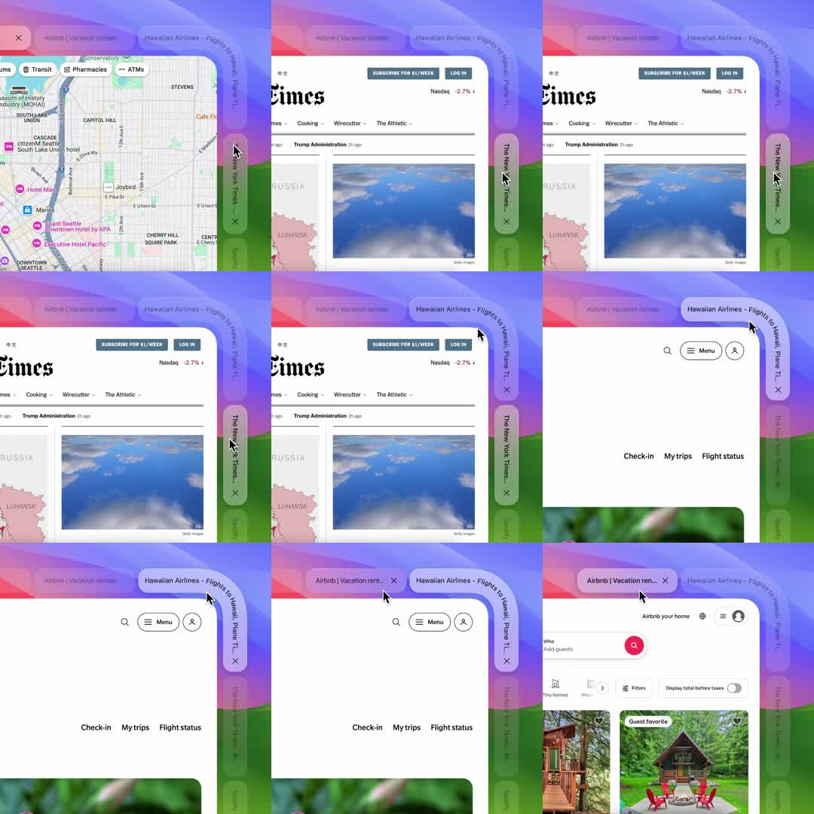

Curved browser tabs: a browser chrome concept where tabs wrap around a rounded corner of the window - the active tab slides along a curved rail (bending around the window's top-right corner) as the user switches between sites (Maps, NYT, Hawaiian Airlines, Airbnb).
Media
Frame-by-frame

0-20%
Browser window over a rainbow-gradient desktop; tabs (Airbnb, Hawaiian Airlines, NYT) follow a curved path that wraps the window corner; content = Google Maps; side tab strip visible along the right edge.
20-45%
Tab selection changes: the active pill glides along the curved rail (following the bend, not a straight line); content crossfades to NYT.
45-70%
Active tab continues around the corner; Hawaiian Airlines page loads; inactive tabs stack behind along the curve with diminishing scale.
70-100%
Cycles to Airbnb; tabs keep sliding along the rail; the motion is a smooth arc with spring settle.
Build prompt
Rebuild this interaction 1:1: curved browser tabs - browser chrome where tabs wrap around the window's rounded top-right corner. The active tab slides along a curved rail (bending around the corner) as you switch sites (Maps, NYT, Hawaiian Airlines, Airbnb); inactive tabs stack along the curve.
## Integration
Integration: stack-agnostic spec - springs given as stiffness/damping, timed motions as duration + curve, canvas/shader notes are perf guidance only; map every value to your framework and animation library of choice.
## Scene
Browser window over a rainbow-gradient desktop. Tabs (Airbnb, Hawaiian Airlines, NYT) follow a curved path from the top edge around the corner into a side strip along the right edge. Content viewport crossfades per site (Google Maps, NYT, Hawaiian Airlines, Airbnb).
## Motion spec
Pattern: selection-driven travel along a path.
- Tab switch: the active pill glides along the curved rail - following the bend, not a straight line - over 450ms, spring stiffness ~200, damping ~24, settling with a soft arc.
- Tab rotation updates continuously to stay tangential to the curve.
- Inactive tabs stack behind along the curve with diminishing scale (~5% per step back).
- Content crossfades 250ms to the selected site.
## Calibration
- 450ms spring travel: fast enough to feel direct, slow enough to show off the curve - the arc is the product.
- Tangential rotation must be computed per frame from the path, not interpolated between endpoints.
- Diminishing scale on the inactive stack (95%, 90%...) creates the depth; equal sizes flatten it.
## Reduced motion
Active tab fades to its new position (200ms opacity); content swaps with the same fade. No path travel.
## Don't miss
- Position comes from path length parametrization - x/y lerps will cut the corner.
- The rail visibly wraps the window corner; the bend is the entire concept.
- Content crossfade is quick (250ms) and never overlaps the tab's travel mid-bend.